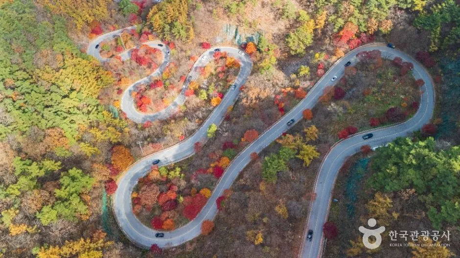
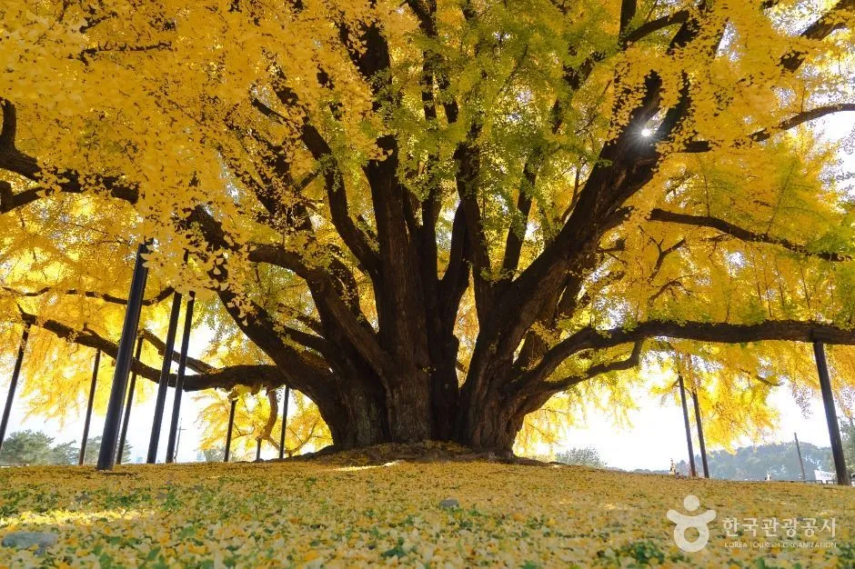
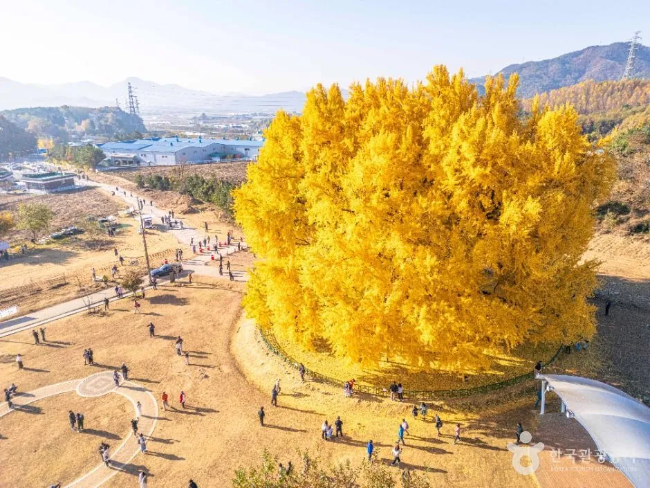
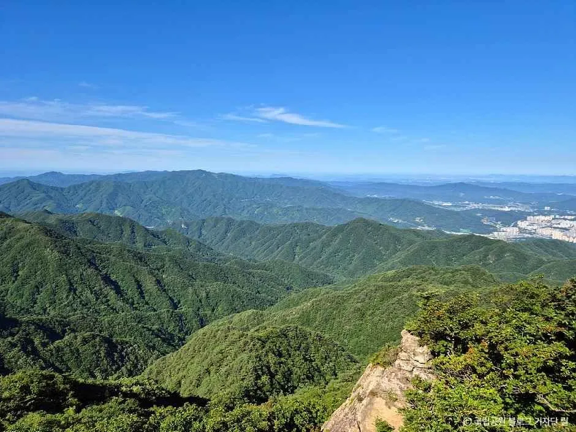
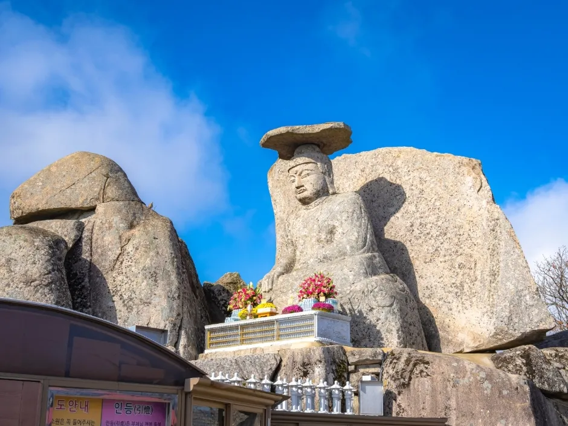
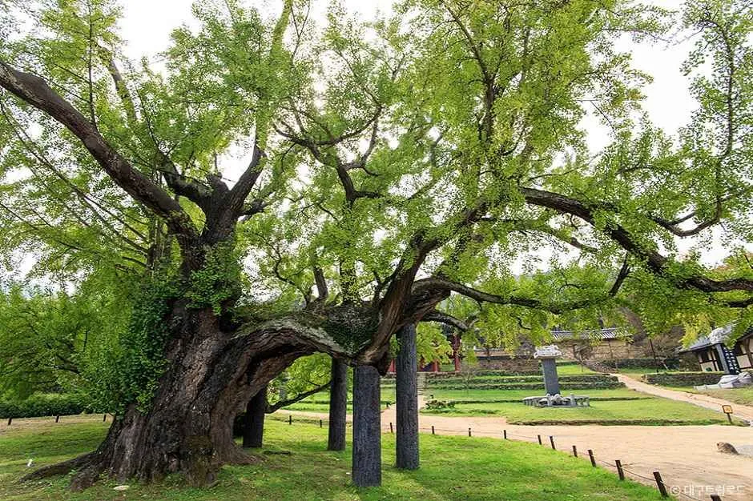

▲ 공식 '노을빛 가을 힐링 드라이브' 추천 명소 중 하나인 단양 보발재. 단풍 사이로 S자 고갯길이 이어진다 사진=한국관광공사
10월 1일부터 전국 어디든 '인증샷 한 장'이 곧 응모권이 된다. 문화체육관광부·한국관광공사의 '대한민국 명소발굴 100×100' 국민 참여 이벤트 가운데 '프로 방랑러의 도장깨기 — 가을 시즌'이 10월 1일부터 11월 1일까지 열린다. 이름은 도장깨기지만 스탬프 앱이 아니라 명소에서 찍은 인증샷을 네이버폼으로 제출하는 방식이다. 같은 기간 열리는 '웃픈 사진 콘테스트'(10월 1~30일)는 별도 이벤트다.
이 글은 공식 이벤트 페이지(spot100x100.kr)의 안내문과 언론 보도를 대조해 참가 방법·인정 조건·경품·유의사항을 정리하고, 자동차로 묶어 돌기 좋은 명소 코스를 제안한다. 공식 안내에 없는 내용은 '확인 못 함'으로 표시했다.
1. 이벤트 한눈에 — 두 이벤트를 헷갈리지 말 것
보도에는 '도장깨기'와 '웃픈 사진'이 한 묶음으로 소개되지만, 공식 이벤트 페이지에서는 참여 창구와 경품이 서로 다른 별개 이벤트로 나뉘어 있다. 응모 창구가 다르므로 둘 다 노린다면 각각 따로 제출해야 한다.
| 항목 | 프로 방랑러의 도장깨기 — 가을 시즌 | 웃픈 사진 콘테스트 |
|---|---|---|
| 기간 | 2026. 10. 1. ~ 11. 1. | 2026. 10. 1. ~ 10. 30. |
| 제출물 | 명소 방문 인증샷 (본인 신체 일부 + 명소) | 국내여행 중 직접 촬영한 웃픈 사진 + 명소명 + 짧은 사연 |
| 제출 창구 | 네이버폼 (이벤트 페이지 '네이버폼 제출하기' 버튼) | 네이버폼 (이벤트 페이지 '이벤트 참여하러 가기' 버튼) |
| 경품 | 네이버페이 2만 원권 125명 / 현대백화점 5만 원권 20명 | 최우수작 10명 신세계 5만 원권, 우수작 40명 네이버 포인트 5천 원, 참여상 50명 네이버 포인트 5천 원 (공식 안내) |
| SNS 태그 | #대한민국구석구석 (당첨 인원 초과 시 SNS 인증 참여자 우선) | #명소발굴100x100 #웃픈사진콘테스트 (인스타그램, 당첨 확률 상승) |
| 주관 | 한국관광공사 (운영·경품 발송은 운영 대행사 위탁) | |
이벤트 안내와 제출은 공식 페이지에서 한다. 100×100 이벤트 공식 페이지 바로가기
ℹ️ 웃픈 사진 경품, 보도와 공식 안내가 다르다
다수 보도는 "우수 참여자 50명에게 웃픈 여행사진 굿즈 티셔츠 증정"으로 전했다. 반면 공식 이벤트 페이지 안내문에는 최우수작 10명(신세계 상품권 5만 원 + 기념 티셔츠 제작 이용권), 우수작 40명(네이버 포인트 5천 원 + 티셔츠 제작 이용권), 참여상 50명(네이버 포인트 5천 원)으로 적혀 있다. 티셔츠 대상이 총 50명이라는 점은 두 자료가 일치하므로, 실제 경품은 공식 페이지 기준으로 확인하는 것이 안전하다.
2. 참가 방법과 인정 조건 — 인증샷에 '나'가 나와야 한다
공식 이벤트 안내는 4단계로 요약된다. 스탬프 앱 설치나 회원가입은 안내에 없다(개인정보 제공 동의는 필요).
| 단계 | 내용 |
|---|---|
| STEP 1 | 4개 주제 또는 '만끽지도' 중 원하는 명소를 확인하고 방문 |
| STEP 2 | 본인을 인증할 수 있는 신체 일부(얼굴, 팔, 손, 발 등)가 방문 명소와 함께 보이도록 인증샷 촬영 |
| STEP 3 | '네이버폼 제출하기' 버튼으로 인증샷 제출 |
| STEP 4 | 다음 명소도 여행하고 도장깨기 이어가기 |
✅ 인정 조건 체크포인트
· 인증 대상은 '이벤트 기간 내 지정된 명소'의 방문·인증을 완료한 참여자다
· 대상 명소는 4개 주제 추천 명소 40곳뿐 아니라 '만끽지도'의 명소도 선택 가능하다고 안내돼 있다 (만끽지도는 국민 투표로 정해진 1만 개 명소 지도)
· 방문한 명소 수에 따라 '새싹 방랑러(1~2곳)'와 '프로 방랑러(3~10곳)' 구간이 나뉜다
· SNS 인증은 이벤트 기간 내 업로드한 게시물만 인정되며, 당첨자 발표·확인 시점까지 공개 상태여야 한다
· 인증샷 위치를 GPS로 검증하는지, 같은 명소를 여러 번 제출하면 몇 곳으로 세는지, 한 주제에 몇 곳을 채워야 하는지는 공식 안내에서 확인 못 함
제출 창구는 이벤트 페이지 안의 버튼으로 연결된다. 이벤트 페이지에서 네이버폼 제출하기
3. 경품과 당첨 순서 — 방문 수가 1순위 기준
방문 명소가 많을수록 상위 구간에 들지만, 상위 구간의 당첨 인원은 오히려 적다. 3~10곳을 다녀온 '프로 방랑러'는 20명만 뽑고, 1~2곳만 다녀온 '새싹 방랑러'는 125명을 뽑는다. 인원 초과 시에는 아래 순서로 우선 선정한다.
| 구간 | 조건 | 경품 | 인원 |
|---|---|---|---|
| 새싹 방랑러 | 1~2곳 방문 | 네이버페이 상품권 2만 원권 | 125명 |
| 프로 방랑러 | 3~10곳 방문 | 현대백화점 상품권 모바일 교환권 5만 원권 | 20명 |
| 인원 초과 시 우선순위: 1순위 방문 명소 수 → 2순위 가을 추천 명소 방문 여부 → 3순위 SNS 인증 여부 → 동일 조건이면 무작위 추첨 | |||
- 중복 당첨 불가: 상위 구간에서 미당첨이면 충족하는 하위 구간의 추첨 대상에 자동 포함되지만, 중복 당첨은 되지 않는다.
- 제세공과금: 5만 원을 초과하는 경품의 제세공과금(22%)은 당첨자 부담이다. 이번 최대 경품이 5만 원권이라 해당될지는 공식 안내에서 확인 못 함.
- 개인정보: 운영·경품 발송을 위한 개인정보 제공 및 제3자 위탁 동의가 필요하고, 수집 정보는 경품 발송 완료 후 3개월 이내 파기된다.
- 11곳 이상 방문: 공식 안내에는 3~10곳까지만 구간이 있다. 그 이상의 별도 등급은 확인 못 함.
- 일정·경품 변경: 운영 상황에 따라 일부 바뀔 수 있다. 문의는 이벤트 운영 사무국 02-517-2102(명소발굴 이벤트는 3번).
4. 4개 주제와 공식 추천 명소 40곳 — 차로 가기 좋은 곳은?
공식 '가을 명소 큐레이션' 페이지는 4개 주제별로 추천 명소 10곳씩을 보여 준다. 이 40곳이 경품 우선순위의 '가을 추천 명소'와 같은 목록인지는 공식 문구로 연결돼 있지 않아 확인 못 함(같은 이름이라 그럴 가능성이 높다는 추정)이다. 일부 언론은 러닝 주제를 '억새·단풍길 러닝'으로 소개했지만, 공식 페이지의 주제명은 '러닝코스'다.
| 주제 | 추천 명소 10곳 |
|---|---|
| 노을빛 가을 힐링 드라이브 | 군산 새만금방조제, 부산 광안대교, 남해 독일마을, 영덕 블루로드, 양평 두물머리, 함양 지안재, 삼척 새천년해안도로, 보성 대한다원 보성녹차밭, 단양 보발재, 팔공산국립공원 |
| 러닝코스 | 서울 여의도 한강공원, 경주 보문호, 제주 사려니숲길, 태안 해변길 5코스(노을길), 대전 유성온천공원, 대구 수성못, 청주 무심천, 성주 성주별고을체육공원, 강릉 경포호, 수원 광교호수공원 |
| 아날로그 감성, 스토리 가득한 노거수 | 군산 초원사진관, 서울 낙원상가, 부산 흰여울문화마을, 서울 동묘 벼룩시장, 대전 세천유원지, 안동 용계리은행나무, 원주 반계리 은행나무, 서산 해미읍성, 영주 부석사, 도동서원 |
| K-마운틴 정복 | 제주 한라산, 울산 영남알프스, 대전 식장산, 합천 황매산, 양양 설악산, 광주 무등산, 울산 신불산, 대구 팔공산, 서울 관악산, 정선 민둥산 |
주제별 목록은 공식 큐레이션 페이지에서 명소 상세로 연결된다. 가을 명소 큐레이션 바로가기
ℹ️ '만끽지도'로 고르면 선택지가 훨씬 넓어진다
공식 안내상 인증 대상은 4개 주제뿐 아니라 '만끽지도' 중 원하는 명소까지 포함한다. 만끽지도의 100개 주제 가운데 '일출과 일몰 포인트', '힐링 드라이브 코스', '러닝 코스', '스토리 가득한 노거수', 'K-마운틴 정복' 등에는 각각 100곳이 올라 있어, 위 40곳 밖에서도 코스를 짤 수 있다. 단 40곳 밖의 명소가 '가을 추천 명소 방문 여부(2순위)'에 반영되는지는 확인 못 함이므로, 경쟁이 치열한 상위 구간을 노린다면 40곳을 우선 넣는 편이 안전하다.
5. 자동차로 돌기 좋은 코스 4가지 — 한 번 이동에 명소 2~3곳
도장깨기는 3곳 이상이면 '프로 방랑러' 구간에 든다. 다만 3곳은 최소 조건일 뿐이고, 응모가 정원(20명)을 넘으면 방문 명소 수가 많은 순으로 우선한다는 것이 공식 유의사항이므로 3곳만으로 당첨이 보장되는 것은 아니다. 아래 코스는 공식 큐레이션 40곳과 만끽지도 목록의 좌표를 기준으로, 명소 사이가 가까운 조합만 골랐다. 거리는 지도상 직선거리라 실제 도로 거리·소요 시간은 이보다 길다(카카오맵·티맵 등으로 확인). 코스 D는 2곳이라 다른 명소를 하나 더 붙여야 3곳이 된다.
| 코스 | 명소 조합 | 주제 | 구간 직선거리 |
|---|---|---|---|
| A. 충북 중부내륙 | 단양 보발재 → 단양 도담삼봉 → 제천 청풍호 전망대 | 드라이브 / 드라이브·일몰 / 일몰 (만끽지도) | 12.0km → 12.9km |
| B. 강원 원주 | 원주 반계리 은행나무 → 소금산그랜드밸리 → 치악산 | 노거수 / 만끽지도 자연공원 / K-마운틴 (만끽지도) | 8.6km → 19.9km |
| C. 대구 3주제 | 팔공산국립공원 → 수성못 → 도동서원 | 드라이브·K-마운틴 / 러닝 / 노거수 | 24.2km → 26.3km |
| D. 수도권 근교 양평 | 양평 두물머리 → 양평 용문사 은행나무 | 드라이브·노거수 / 노거수 (만끽지도) | 22.4km |
코스 A. 보발재에서 청풍호까지 — 단풍 고갯길에서 호수 전망까지
공식 드라이브 추천 명소인 단양 보발재는 공식 설명이 "붉게 물든 단풍 사이로 굽이치는 고갯길"이다. 여기서 도담삼봉(만끽지도 드라이브 코스 34위·일출과 일몰 포인트 47위), 제천 청풍호 전망대(일출과 일몰 포인트 77위)로 이어 가면 주제가 겹치는 명소 3곳이 나온다. 도담삼봉은 입장 무료이지만 주차가 유료라는 점, 청풍호반케이블카 주차장은 무료라는 점은 기존 기사에서 정리했다.

▲ 보발재의 S자 고갯길. 굽이가 이어지는 구간이라 커브 앞에서는 속도를 줄여야 한다 사진=한국관광공사
자세한 주차·요금·연계 코스는 도담삼봉·만천하스카이워크 기사, 제천 청풍호반케이블카 기사, 월악산 영봉·충주호 기사를 참고하면 된다. 월악산 악어봉·제비봉은 만끽지도 'K-마운틴 정복' 목록에 있다.
코스 B. 원주 — 노거수·협곡·산을 한 도시에서
공식 노거수 추천 명소인 원주 반계리 은행나무(공식 설명 "가을이면 황금빛으로 물드는 천연기념물")를 시작점으로 잡는다. 기존 기사에 따르면 나무 인근에 2025년 9월 준공한 무료주차장이 있다. 이어 소금산그랜드밸리(만끽지도 자연공원·브릿지 투어 등재)와 치악산국립공원(만끽지도 K-마운틴 27위)을 잇는 구성이다. 소금산과 치악산은 4개 주제 공식 추천 40곳에는 없어 '가을 추천 명소' 우대 대상인지는 확인 못 함이다.

▲ 황금빛으로 물든 원주 반계리 은행나무. 굵은 가지 아래로 안전 지지대가 설치돼 있다 사진=한국관광공사

▲ 단풍철에는 나무 주변 광장과 산책로에 방문객이 몰린다. 반계리 은행나무 광장 전경 사진=한국관광공사

▲ 치악산국립공원에서 바라본 능선 조망(초록이 짙은 여름철 모습). 정확한 탐방 지점은 코스에 따라 다르다 사진=한국관광공사(원본 비율 유지)
코스 세부는 반계리 천년 은행나무 기사, 소금산 출렁다리 기사에서 볼 수 있다.
코스 C. 대구 — 한 도시에서 3개 주제를 채우는 코스
공식 큐레이션 40곳을 가장 효율적으로 채울 수 있는 곳이 대구다. 팔공산국립공원은 드라이브 목록("오색 단풍 터널을 지나 만나는 고즈넉한 산사 드라이브")에, 대구 팔공산은 K-마운틴 목록에, 수성못은 러닝, 도동서원은 노거수("400년 은행나무와 낙동강 절벽이 빚어낸 가을 비경") 목록에 올라 있다. 팔공산은 두 주제에 이름이 모두 올라 있는데, 한 곳을 방문해 두 곳으로 세는지는 확인 못 함이다.

▲ 팔공산국립공원 갓바위지구 일대의 가을 산과 계곡. 지구별로 진입 도로가 다르다 사진=한국관광공사

▲ 팔공산 갓바위 석조여래좌상. 머리 위에 갓 모양 바위를 얹은 정상부 기도처로 유명하다 사진=한국관광공사
▲ 해 질 무렵의 대구 수성못. 분수와 오리배가 떠 있는 호수 둘레가 러닝 명소로 큐레이션에 올라 있다 사진=한국관광공사

▲ 도동서원 경내의 노거수. 잎이 푸른 여름~초가을 무렵 모습으로, 가을 단풍철 색과는 다르다. 세계유산으로 등재된 서원이다 사진=한국관광공사(변경 금지, 원본 비율 유지)
팔공산 지구(동화사·갓바위·파계사·은해사 등)는 행정구역과 진입 도로가 나뉘어 있어, 내비게이션에 지구 이름까지 입력해야 엉뚱한 방향으로 들어가지 않는다. 도동서원은 대구 시내 중심에서 남서쪽 낙동강변에 있어 팔공산과는 반대 방향이다(직선 약 49km).
코스 D. 수도권 근교 — 양평 두물머리와 용문사
서울에서 당일로 다녀올 수 있는 조합이다. 양평 두물머리는 공식 드라이브 추천 명소이고(공식 설명 "물안개와 억새가 어우러진 가을 감성 드라이브"), 노거수(13위)·일출과 일몰 포인트(30위)에도 올라 있다. 여기서 용문사 은행나무(천연기념물 제30호, 노거수 31위)로 이어진다. 용문사는 기존 기사 기준 입장료 성인 2,000원·소형 주차료 1,000원이고 단풍 절정 주말 오전에 붐빈다. 자세한 내용은 용문사 은행나무 기사에 있다.
6. 운전 전 체크 — 주차·접근·안전과 '이런 명소도' 링크
| 항목 | 체크 내용 |
|---|---|
| 주차 | 명소마다 유·무료가 다르다(도담삼봉 유료, 청풍호반케이블카·반계리 은행나무 무료, 용문사 소형 1,000원 등은 기존 기사 기준). 단풍 절정 주말은 오전 일찍 만차가 되기 쉽다 |
| 고갯길·해안도로 | 보발재·지안재 같은 굽이길은 커브 앞 감속, 인증샷 촬영을 위한 갓길·차로 정차 금지. 주차 가능 지점에서만 촬영 |
| 인증샷 | 본인 신체 일부와 명소가 함께 나와야 하므로 삼각대나 동행자 촬영을 준비하고, 명소 표지판·상징물이 배경에 보이게 찍기 |
| 충전·연료 | 산간 구간은 충전소·주유소 간격이 넓을 수 있어 출발 전 경로상 위치 확인 (구체 위치는 코스별 확인 못 함) |
| 단풍 시기 | 절정 시기는 해마다 다르고 공식 자료로 일괄 확인하지 못했다. 방문 직전 지자체·국립공원 공지 확인 |
만끽지도에서 고르는 명소 중 카프리즘이 다룬 곳으로는 정동진(일출과 일몰 포인트 2위)과 전주 야행 코스(만끽지도 러닝 코스에 '전주천~한옥마을' 등재)가 있다. 청풍호는 청풍호반케이블카 기사에서 볼 수 있다. 이 명소들이 인증 대상에 포함된다는 것은 공식 안내 문구("만끽지도 중 원하는 명소")에 근거한 해석이다.
명소 지도와 검색은 공식 만끽지도에서 확인한다. 만끽지도 바로가기
7. 요약
'프로 방랑러의 도장깨기 — 가을 시즌'은 10월 1일~11월 1일, 명소에서 본인 신체 일부와 함께 찍은 인증샷을 네이버폼으로 내는 방식이다. 4개 주제(노을빛 가을 힐링 드라이브·러닝코스·아날로그 감성과 노거수·K-마운틴 정복) 또는 만끽지도 명소를 방문하며, 1~2곳이면 네이버페이 2만 원권(125명), 3~10곳이면 현대백화점 5만 원권(20명) 추첨 대상이다. 인원 초과 시 방문 수 → 가을 추천 명소 → SNS 인증 순으로 우선한다.
웃픈 사진 콘테스트(10월 1~30일)는 별도 이벤트이며, 공식 안내상 최우수작 10명·우수작 40명·참여상 50명이다(보도의 '티셔츠 50명'과 표현이 다름). 자차로는 보발재·도담삼봉·청풍호, 원주 반계리·치악산, 대구 팔공산·수성못·도동서원, 양평 두물머리·용문사 조합이 3곳 이상을 채우기 쉽다. 11곳 이상 등급, 당첨자 발표일, 위치 검증 방식은 확인 못 함이므로 공식 페이지 공지를 수시로 확인하자.